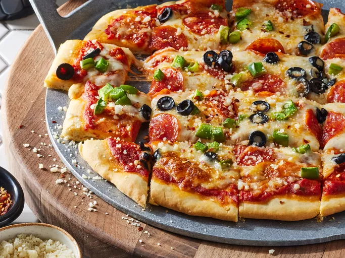

Pizza

Description
No yeast? No problem! This no-yeast pizza dough recipe is not only quicker than traditional dough, it yields perfect homemade pizza crust every time!
Ingridients
- Flour: This yeastless pizza crust starts with all-purpose flour.
- Baking powder: Without yeast, the pizza dough needs baking powder to rise.
- Salt: A pinch of salt enhances the flavor and strengthens the gluten.
- Milk: You’ll need ½ cup of fat-free milk.
- Olive oil: Olive oil locks in moisture and keeps the dough from drying out.
Steps
- Mix the dry ingredients, then stir in the wet ingredients until a dough forms.
- Turn out the dough and knead.
- Shape the dough into a ball and let rise.
- Roll the dough out into a circle.
- Preheat the oven to 400 degrees F (200 degrees C).
- Bake the crust in the preheated oven for 8 minutes.
- Top with your favorite toppings and bake until the crust is golden brown, about 10 to 15 minutes more.